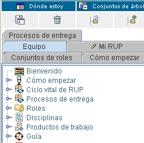

| My View |
 |
|
| Nota: la función My View, implementada como applets, requiere JRE 1.4.2 o superior (puede descargar
un JRE desde http://java.sun.com/j2se)). Si el sitio que está
visitando se publicó sin applets, entonces My View no estará presente.
En el navegador de árbol que aparece en el panel izquierdo de la ventana del navegador, puede navegar por los temas del sitio web. Inicialmente contiene un conjunto de árboles por omisión o paneles de vistas con pestañas. Puede personalizar la navegación creando sus propias vistas de árbol. Para empezar, guarde uno de los árboles por omisión para utilizarlo como plantilla de inicio para su nueva vista de árbol. A continuación puede crear, personalizar o eliminar temas. Tipos de árbolEl navegador de árbol muestra dos tipos de árbol:
El navegador de árbol le permite mostrar y ocultar árboles en otras pestañas de modo que pueda ver sólo los árboles que desee.
La operación de mostrar u ocultar estados fijos de árbol es persistente. La próxima vez que inicie el sitio web, verá el árbol seleccionado o todos los árboles, en función del estado seleccionado la última vez que usó el sitio web. Creación de un árbol My ViewPuede crear un número ilimitado de árboles My View. El ejemplo siguiente muestra cómo añadir un árbol My View que se pueda modificar.
Aparece el recuadro de diálogo Guardar como, que le solicita un título para el árbol My
View.
Personalización de un árbol My ViewPuede personalizar el árbol My View y sus temas de diferentes maneras:
Añadir un tema nuevo al árbol My View
|


|
|
Para añadir un tema nuevo, pulse Añadir nodo nuevo. |
| Se abre el recuadro de diálogo Editor de propiedades. Especifique las diversas propiedades de este nuevo tema. |
|
|
| Especifique los valores de las propiedades. Observe que puede utilizar el botón de examinar, situado a la derecha, para buscar iconos y enlaces de archivos locales en las ubicaciones de archivo. |
|
|
|
El tema nuevo se añade al final del árbol. |
Nota: también puede añadir nuevos temas arrastrando archivos desde un explorador de archivos, como Windows Explorer, a cualquier tema del árbol. El nombre del tema es inicialmente el nombre del archivo. Puede cambiarlo, como se ha descrito en esta sección.
Los cambios realizados en el árbol My View se guardan en el momento en que se realizan.
Añadir un tema existente desde un árbol por omisión a un
árbol My View 
En esta sección se describe cómo copiar un tema existente desde un árbol por omisión a un árbol My View.
|
|
Pulse Añadir del valor por omisión. |
|
Arrastre cualquier tema al árbol My View. |
|
También puede elegir el árbol por omisión desde el que desea arrastrar un tema. Pulse en la lista para seleccionar el árbol por omisión que desea. El árbol se renueva con los temas del árbol por omisión seleccionado. |
Los cambios realizados en el árbol My View se guardan en el momento en que se realizan.
Insertar un tema nuevo
|
|
Para insertar un tema nuevo en uno existente, pulse el botón derecho del ratón sobre éste. En el menú emergente, pulse Insertar nuevo. El ejemplo siguiente muestra la inserción de un tema nuevo (titulado Nueva guía de aprendizaje) en Disciplinas. |
| Se abre el recuadro de diálogo Editor de propiedades. |
|
|
| Especifique las diversas propiedades de este nuevo tema. |
|
|
|
|
El tema nuevo se inserta en Disciplinas. |
Cambiar las propiedades de un tema
|
Para cambiar las propiedades de un tema, pulse el botón derecho del ratón sobre el tema (por ejemplo, Visión general). En el menú emergente, seleccione Propiedades. |
|
Se abre el recuadro de diálogo Editor de propiedades. En este ejemplo, el título del tema Visión general se cambiará por Visión general modificada. En la propiedad Nombre, escriba Visión general modificada en el campo Valor, y pulse Aceptar. También puede cortar y pegar valores de texto en los campos Valor de este recuadro de diálogo. Pulse Aceptar para cerrar el recuadro de diálogo. |
|
|
|
El nombre del tema se cambia en el árbol. |
Nota: el campo Enlazar a del recuadro de diálogo Editor de propiedades le permite enlazar a un URL o a un archivo almacenado en cualquier sitio del sistema.
Cambiar la posición de un tema dentro del elemento padre
La posición de un tema puede cambiarse dentro del elemento padre. En este ejemplo, el tema Disciplinas subirá de posición.
|
En el menú emergente, pulse Subir. |
|
En la pantalla se muestra la nueva posición del tema Disciplinas. |
Los cambios realizados en el árbol My View se guardan en el momento en que se realizan.
Mover un tema a una posición fuera el elemento padre
Puede mover un tema a otro árbol arrastrando y soltando.
- Para empezar, pulse el tema y arrástrelo al tema nuevo.
- Los cambios realizados en el árbol My View se guardan en el momento en que se realizan.
Suprimir un tema
- Para suprimir un tema, seleccione el que desee eliminar y pulse Suprimir.
- Los cambios realizados en el árbol My View se guardan en el momento en que se realizan.
Cambiar el icono de un tema
- Para cambiar el icono de cualquier tema del navegador de árbol, arrastre el archivo de icono al tema o utilice el Editor de propiedades para cambiar el nombre del icono. Un archivo de icono es un archivo .gif, .jpg o .bmp. El icono nuevo sustituye al antiguo.
- Los cambios realizados en el árbol My View se guardan en el momento en que se realizan.
Suprimir el árbol My View
En esta figura se muestra cómo suprimir el árbol My View.
|
|
Seleccione el árbol que desee suprimir (en este ejemplo, Guía de aprendizaje de RUP). Pulse la pestaña Guía de aprendizaje de RUP y, a continuación, pulse Suprimir. |
Aparece el recuadro de diálogo Confirmar supresión del árbol para que confirme la supresión. Pulse
Aceptar ante la pregunta ¿Desea suprimir Guía de aprendizaje de RUP de forma
permanente?
|
 |
El árbol Guía de aprendizaje de RUP se elimina de las pestañas del panel de árbol. |
© Copyright IBM Corp. 1987, 2006. Reservados todos los derechos. |